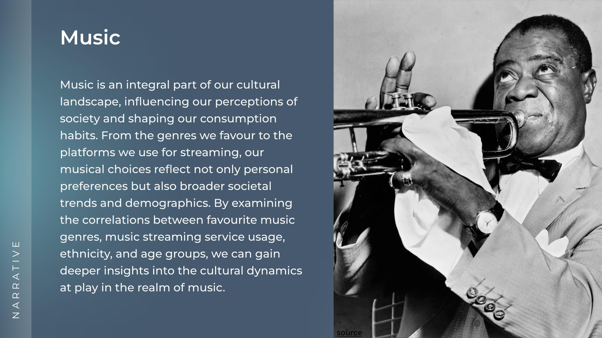
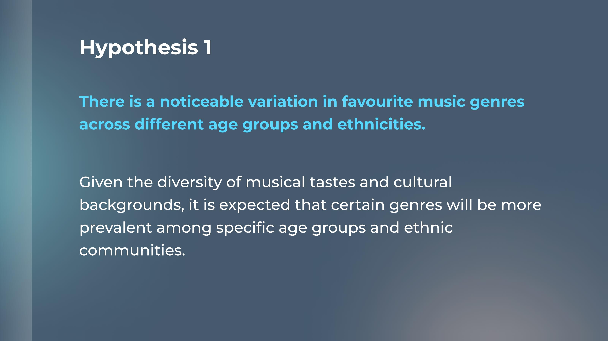
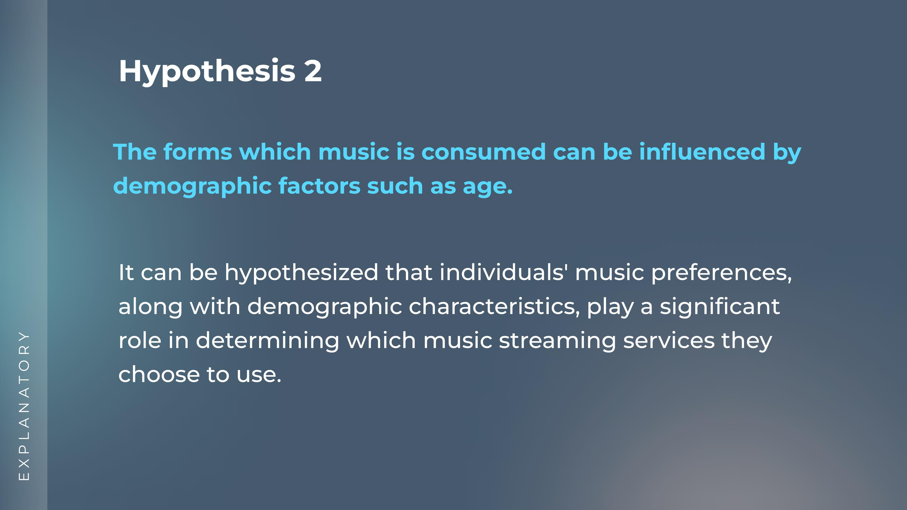
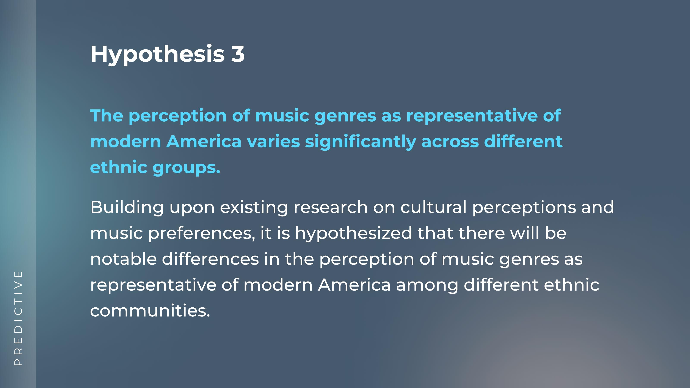
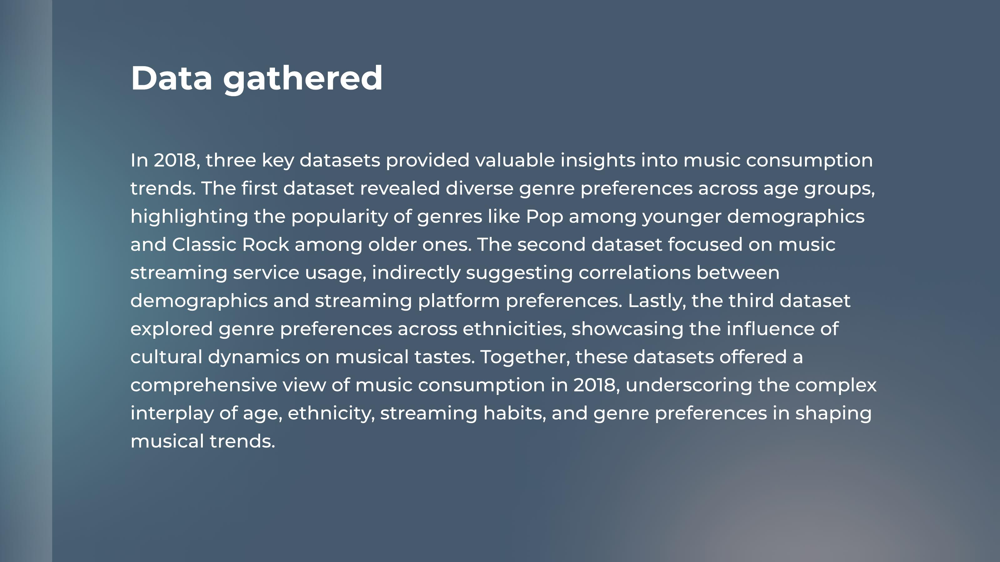
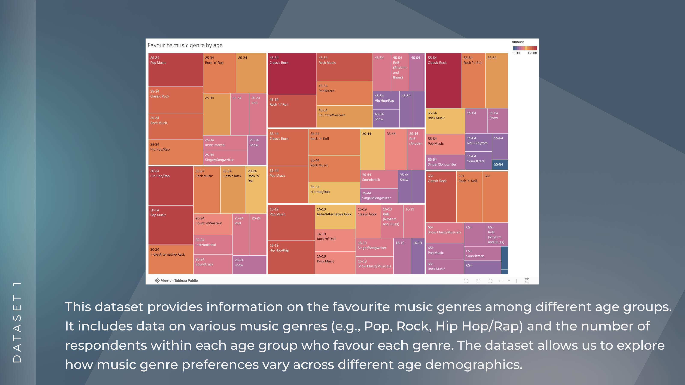
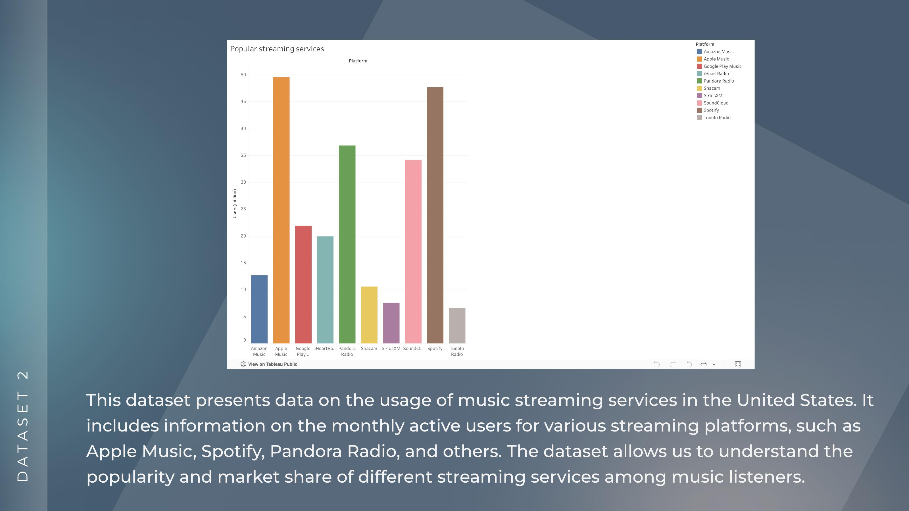
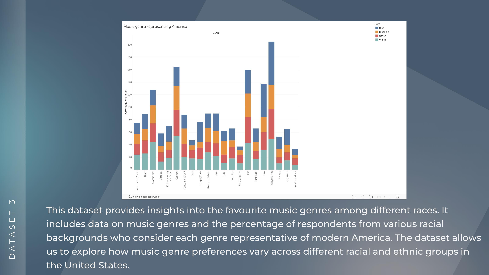

Project cover — The Interplay of Music Preferences, Streaming Platforms, Ethnicity, and Age
What does the music you listen to say about who you are? An information design project examining how age, ethnicity, and streaming habits shape music preferences across the US; three datasets, three hypotheses, one visual narrative.
Music is personal but it's also deeply cultural. The genres we gravitate toward, the platforms we stream on, and the artists we consider "representative" of a culture are all shaped by demographic factors we often don't consciously notice.
This project asked: can data reveal the cultural dynamics at play in how Americans consume music? Using three 2018 datasets from Statista, I set out to find patterns, test hypotheses, and ultimately tell one cohesive visual story.




There is a noticeable variation in favourite music genres across different age groups and ethnicities.
Demographic factors like age influence how music is consumed and which streaming platforms people choose.
The perception of which music genres "represent modern America" varies significantly across ethnic groups and cultural identity shapes what people see as mainstream.



This project didn't start with music. I began with a completely different topic, but after reviewing available datasets I found the volume of information overwhelming and couldn't find data that genuinely engaged me. I stepped back, did a proper brainstorming session, and settled on music, which stayed aligned with the theme of content consumption while being a topic I actually wanted to spend time with.
That pivot taught me something important about data visualisation projects: you have to care about the subject. The design decisions, what to highlight, what comparison to lead with, what the emotional arc of the dashboard should be, all of those require genuine curiosity about the material. If you're just executing a brief, those decisions feel arbitrary. When you're invested, they feel inevitable.

Pop dominates among younger age groups; Classic Rock indexes much higher among 45+ listeners, confirming strong generational genre clustering.
Younger listeners skew heavily toward Spotify and Apple Music; older demographics lean toward Pandora Radio; platform choice tracks closely with age.
Hip Hop/Rap is considered representative of modern America by a significantly higher proportion of Black respondents than any other ethnic group.
Country music is seen as "representative of modern America" primarily by white respondents, revealing how cultural identity shapes perception of the mainstream.
Data visualisation expanded my toolkit as a designer in ways I didn't expect. The core challenge isn't choosing chart types, it's deciding what story you want to tell and what comparisons you want the viewer to make. Every design decision in a dashboard is an argument about what matters.
I also became more aware of how data about people carries cultural weight. The findings here aren't neutral statistics. They reflect real patterns of identity, belonging, and representation. How you visualise that, and what you choose to foreground, has consequences. That responsibility is something I take seriously as a designer.